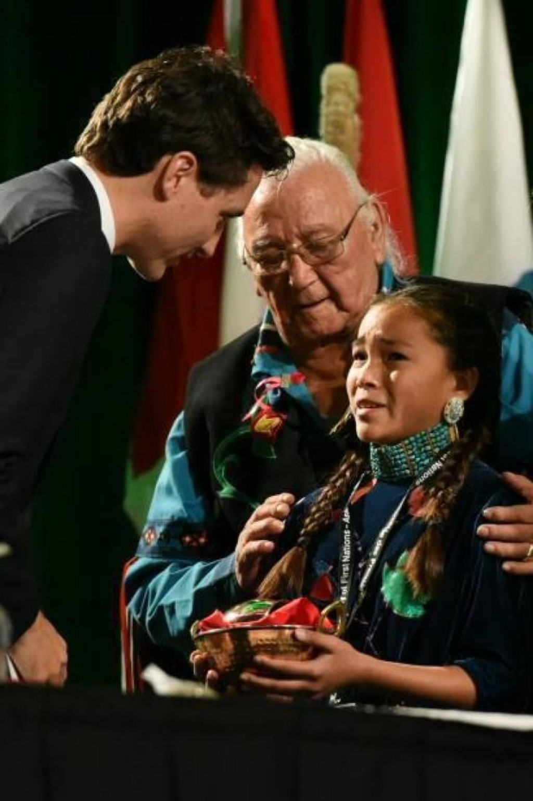

2026.06.30
오텀 펠티어
물을 지키는 일은 자기 삶의 경계를 다시 긋는 일입니다.
오텀 펠티어는 자아의 끝을 자기 피부가 아니라, 물이 흐르는 모든 곳에 두려는 사람입니다.

그가 지켜온 것은 단지 깨끗한 식수만이 아닙니다. 그는 물을 통해 인간과 땅, 조상과 아이들, 현재와 미래가 서로 어떻게 이어져 있는지를 보여줍니다.
01 — 트뤼도 앞에 선 열두 살
막상 총리 앞에 섰을 때, 오텀은 준비한 말을 다 하지 못했습니다. 울음이 올라왔고, 그는 파이프라인 문제를 겨우 꺼냈습니다. 트뤼도는 물을 보호하겠다고 답했지만, 오텀은 나중에 그 약속이 지켜질지 알 수 없다고 말했습니다.
이 장면은 흔히 '용감한 어린 활동가'의 일화로 소비되지만, 조금 더 깊이 들여다보면 다른 결이 보입니다. 아이가 어른에게 무언가를 부탁한 순간이라기보다, 어른들이 이미 알고 있었지만 미루고 있던 약속을 아이가 다시 기억하게 만든 순간이었습니다.
02 — 누구의 딸, 누구의 조카
오텀 펠티어는 2004년 캐나다 온타리오 매니툴린섬에서 태어난 아니시나베 물 보호 활동가입니다. Wiikwemkoong Unceded Territory 출신으로 알려져 있고, 2019년에는 열네 살의 나이로 Anishinabek Nation의 Chief Water Commissioner에 임명되었습니다. Anishinabek Nation의 Women's Water Commission은 물과 오대호 관리 문제에 관해 지도부와 공동체에 조언하고, 전통 지식과 가치를 나누며, 물 문제에 대한 인식을 높이는 역할을 해왔습니다. 오텀의 활동은 혼자 유명해진 천재 소녀의 이야기가 아니라, 원주민 여성 물 보호자들의 오래된 전통 위에서 이어진 젊은 목소리입니다.
그 전통의 중심에는 그의 큰이모 Josephine Mandamin이 있었습니다. Mandamin은 Mother Earth Water Walks를 이끈 원주민 여성 물 보호자였습니다. 그는 오대호 주변을 걸으며 물 불평등과 오염 문제를 알렸고, 구리 물통을 들고 노래하고 기도하며 걸었습니다. 이 걷기는 단순한 캠페인이나 퍼포먼스가 아니었습니다. 물을 향해 몸을 움직이는 일이었고, 물이 인간의 편의시설이 아니라 살아 있는 관계라는 사실을 계속 상기시키는 의식이었습니다. 오텀은 그 길을 이어받았습니다. 물을 말하는 법, 물을 들고 걷는 법, 물 앞에서 인간의 말을 낮추는 법을 그는 가족과 공동체 안에서 배웠습니다.
03 — 끓여 마시기 경고문 앞에서
오텀이 물 문제를 자기 일로 받아들이게 된 계기는 매우 구체적입니다. 그는 여덟 살 무렵 Serpent River First Nation 지역의 의식에 갔다가 독성 식수 표지와 장기적인 끓여 마시기 권고를 보았습니다. 캐나다는 세계적으로 물이 풍부한 나라로 여겨지지만, 많은 First Nations 공동체는 오랫동안 식수 경고와 낡은 기반시설 문제를 겪어왔습니다. 오텀의 활동은 바로 이 모순, 즉 물이 많은 나라에서 어떤 아이들은 수도꼭지의 물을 믿지 못한다는 모순에서 출발합니다.
그래서 그의 활동은 단순히 "물을 아끼자"는 환경 캠페인이 아닙니다. 그는 지역 공동체와 학교, 국제회의와 유엔 무대, 언론 인터뷰와 다큐멘터리를 오가며 물을 둘러싼 권리와 책임을 말해왔습니다. 13세에는 유엔 총회에서 세계 지도자들에게 물 보호를 말했고, 2018년과 2019년에는 유엔 기후행동 관련 무대에도 초청되었습니다. 2019년 Global Landscapes Forum이 유엔 총회에서 마련한 자리에서는 세상을 떠난 큰이모를 기리며 연설을 시작했고, 물과 땅에 대한 아니시나베 사람들의 신성한 연결을 설명했습니다. 그는 Attawapiskat 같은 북부 공동체를 방문해 아이들과 이야기했던 경험을 말하며, 어떤 아이도 깨끗하게 흐르는 물이 무엇인지 모른 채 살아서는 안 된다고 했습니다.
04 — 두 겹으로 말해지는 물
오텀의 말이 강한 이유는, 그가 물을 두 겹으로 말하기 때문입니다.
한편으로 물은 매우 현실적인 문제입니다. 수도관, 정수시설, 예산, 정부의 약속, 파이프라인 승인, 오염, 식수 권고, 생수 의존이 모두 여기에 걸려 있습니다.
물은 태어나기 전부터 우리를 감싸는 것이고, 몸 안에 흐르는 것이며, 땅과 동물과 조상과 아이들을 이어주는 것입니다.
그래서 그의 활동은 환경운동이면서 동시에 세계관의 회복입니다. 물을 물건으로 보는 시선에서, 물을 관계로 보는 시선으로 이동시키는 일입니다.
그의 활동이 널리 알려지는 데에는 다큐멘터리와 책도 역할을 했습니다. 다큐멘터리 『The Water Walker』는 오텀이 유엔에서 연설하기 위해 뉴욕으로 향하는 여정과 그가 짊어진 책임을 따라갑니다. Royal Roads University는 이 다큐멘터리가 2020년 HBO Canada에 의해 구매되었다고 소개합니다. 또 Carole Lindstrom의 그림책 『Autumn Peltier, Water Warrior』는 Josephine Mandamin과 Autumn Peltier 두 사람을 함께 다루며, 원주민 여성들이 물을 지키는 전통이 어떻게 다음 세대의 목소리로 이어지는지를 어린 독자에게 전합니다.
05 — 자아의 경계를 물만큼 넓힌다는 것
지능이란 단순한 계산 능력이 아니라, 자아의 범위를 어디까지 넓혀 살 수 있는가에 가깝다고 본다면, 오텀 펠티어는 자기 자아를 물의 순환만큼 넓힌 사람입니다.
보통 우리는 자아를 피부 안쪽에 둡니다. 내 몸, 내 마음, 내 가족, 내 하루. 그런데 물을 따라가면 그 경계는 금방 흔들립니다. 내가 마시는 물은 한때 구름이었고, 호수였고, 누군가의 땅을 지나왔고, 누군가의 정책 결정에 의해 깨끗해지거나 오염되었습니다.
물은 나와 세계가 분리되어 있지 않다는 사실을 아주 물리적으로 보여줍니다. 오텀은 이 복잡한 진실을 어려운 이론으로 말하지 않습니다. 그저 아이들이 깨끗한 물을 모르는 채 자라서는 안 된다고 말합니다. 단순하지만, 그 문장은 개인의 안위를 넘어 공동체, 미래세대, 비인간 생명, 땅과 호수까지 윤리의 범위를 넓힙니다.
불교의 연기는 어떤 존재도 홀로 서 있지 않다는 통찰입니다. 오텀의 물 이야기도 같은 방향을 가리킵니다. 물은 사람과 땅, 아이와 조상, 동물과 식물, 현재와 미래를 따로 떼어놓지 않습니다. 다만 오텀은 무아의 언어로 자아를 지운다기보다, 아니시나베 여성 물 보호자의 정체성을 통해 자아를 더 깊은 책임 속에 심습니다. 그 차이가 오히려 이 인물을 더 선명하게 만듭니다.
06 — 너무 맑은 상징으로 소비하지 않기
동시에 오텀 펠티어를 너무 맑은 상징으로만 소비하지 않는 것도 중요합니다. 젊은 여성, 특히 원주민 청소년 활동가는 너무 쉽게 "세계의 양심"으로 불립니다. 사람들은 연설을 듣고 감동하지만, 실제 문제는 감동보다 훨씬 느리고 딱딱한 곳에 있습니다. 식수 기반시설, 관할권, 예산, 식민주의의 역사, 정부의 약속 불이행, 파이프라인과 자원 개발의 이해관계가 그곳에 있습니다. 한 청소년이 유엔에서 말해야 겨우 들리는 문제라면, 그 사회의 감각 자체가 이미 많이 무뎌졌다는 뜻이기도 합니다.
그래서 오텀의 삶은 희망적인 이야기이면서 동시에 불편한 이야기입니다. 왜 깨끗한 물을 위해 아이가 전사가 되어야 하는가. 왜 어떤 공동체는 기본적인 물을 위해 세대에 걸쳐 계속 증언해야 하는가. 이 질문은 오텀 개인의 아름다운 의지보다 더 큰 문제를 가리킵니다. 선한 개인이 계속 싸워야만 유지되는 사회는 이미 구조적으로 무언가를 놓치고 있는 사회입니다.
07 — "나를 보세요"가 아니라 "물을 보세요"
그럼에도 오텀 펠티어가 남기는 힘은 분명합니다. 그는 자신을 크게 만들기보다, 우리가 작게 만들어버린 문제를 다시 크게 만듭니다. 물은 배경이 아니라 생명이고, 식수 문제는 지역 민원이 아니라 공동체의 존엄이며, 미래세대는 정치 연설의 문구가 아니라 지금 우리 앞에서 물그릇을 들고 있는 사람이라는 사실을 보여줍니다.
그 점에서 오텀의 자아 확장은 시끄러운 자기확신이 아니라 조용한 방향 전환입니다.
"나를 보세요"가 아니라, "물을 보세요."
그리고 그 물을 따라가다 보면, 결국 우리가 서로에게 얼마나 깊이 이어져 있는지 보게 됩니다.
한국어 번역서에 관하여
오텀 펠티어와 Josephine Mandamin을 다룬 그림책 『Autumn Peltier, Water Warrior』의 확인된 한국어 번역서는 찾지 못했습니다. 현재 확인 가능한 자료 기준으로는 원서와 인터뷰, 연설문, 다큐멘터리 관련 자료를 함께 보는 편이 좋습니다. 원서는 Carole Lindstrom이 쓰고 Bridget George가 그린 그림책으로, Roaring Brook Press에서 출간되었습니다. Josephine Mandamin을 다룬 『The Water Walker』도 함께 읽으면 오텀의 활동이 어디서 이어졌는지 더 잘 보입니다.
오늘 남는 문장
- 자아가 넓어진다는 것은 더 많은 것을 소유하는 일이 아니라, 더 많은 관계를 책임지는 일입니다.
- 물을 사랑한다는 말은 물가에서 감동받는 일이 아니라, 누가 물을 마시지 못하는지 끝까지 묻는 일입니다.
- 좋은 활동가는 세상을 대신 구하는 사람이 아니라, 우리가 잊고 있던 약속을 다시 기억하게 만드는 사람입니다.
더 읽을 자료
- Royal Roads University, Autumn Peltier honorary degree biography
오텀 펠티어의 생애, Chief Water Commissioner 활동, 유엔 연설, 수상 이력을 확인하기 좋은 공식 소개 자료입니다. - Anishinabek Nation, Autumn Peltier appointed Chief Water Commissioner
그가 왜 Anishinabek Nation의 Chief Water Commissioner로 임명되었는지, Women's Water Commission의 역할이 무엇인지 볼 수 있는 자료입니다. - APTN News, The gift and a tearful pipeline plea
2016년 트뤼도 총리에게 물 꾸러미를 건넨 장면과 그가 말하려 했던 내용을 구체적으로 보여주는 기사입니다. - Anishinabek News, 2019 UN speech text
오텀 펠티어의 물 윤리와 유엔 연설의 핵심을 직접 확인할 수 있는 자료입니다. - Carole Lindstrom, Autumn Peltier, Water Warrior
Josephine Mandamin과 Autumn Peltier를 함께 다룬 원서 그림책입니다.